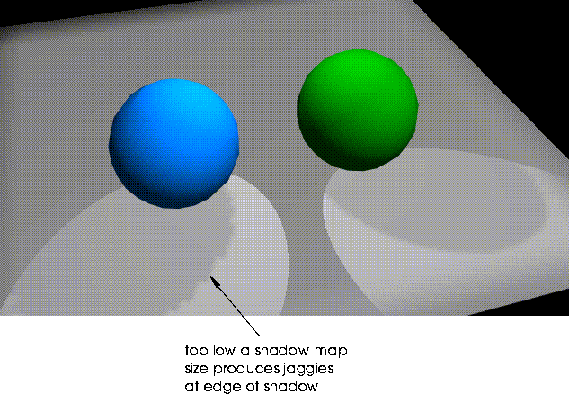
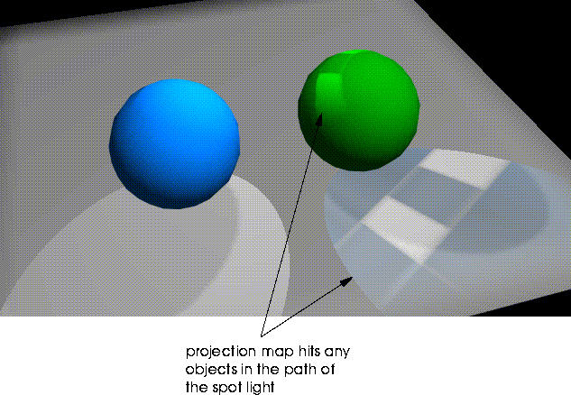

[N-World Contents] [Book Contents] [Prev] [Next] [Index]
Lights
This chapter describes the different types of lights which you can create using N-Geometry and the Lights Editor itself. It also describes the parameters you can use to control the appearance and behavior of lights in your scene.
Creating Lights
N-Geometry provides you with several types of lights for illuminating shaded or rendered objects:
These lights, and their characteristics are described in more detail below.
Initially, the view window contains a single default point light positioned at 100, 300, 150 (up and back) so that it illuminates all visible objects.
You can create lights from the Attributes Editor and from N-Geometry.
From N-Geometry:
1. (CLICK-L) on New Object>Light.
From the Attributes Editor:
1. (CLICK-L) on Lights in the Attributes Editor mode line.
2. (CLICK-L) on New in the LIghts File Operations section of the Lights Editor menu.
The new light parameters menu appears. Use this menu to specify the type and characteristics of your new light. This menu is described in detail in "Defining Light Parameters," on page 4-10.
Light Types
N-Geometry creates the following types of lights:
Ambient
Ambient lights do not have a location; rather, they simulate the infinite number of reflections of the ambient light in a typical room.
Point
A point light is a "dimensionless" point in space that emits a light in all directions.
Note. If you place a point light inside a partially transparent object, you can make that object appear to glow.
Infinite
An infinite light is similar to a star; it is essentially an infinite distance from any object in a scene, so all its rays strike an object at the perpendicular. These lights are useful for lighting only one side of objects in a scene (for example, a planet lit by a distant sun).
Spot
A spot light emits light in a cone or pyramid shaped projection (depending on the shape of the spot pattern), from the tip of the light to the pattern described by the base of the light. You can adjust two projection at the base of the light; the inner shape shows the umbra (where light has 100% of its specified intensity), while the outer shape shows the penumbra (where the light gently falls off to zero for a soft edge). Spot parameters are discussed in detail in the section "Spot Attributes," on page 4-18.
Selecting Light Sources
When manipulating light sources in N-Geometry, you must specify the type of object to be manipulated.
Assigning Lights and Light Groups
When you set up a scene for rendering, you must provide for lighting the scene. You do so by assigning a light group, or groups, to materials, which are in turn assigned to objects in the scene. Although you can create a light in Geometry, it will have no effect upon the rendered scene until it is placed in a light group and associated with a material.
Default Lights
If N-Render encounters an material in the scene that has not been assigned a light, it uses a default light group (consisting of the default point light) to illuminate that object.
Note. This default light is not the default point light that is created when N-Geometry starts up. N-Render has a default point light "built-in" which is located on the Z-axis.
If you really want an object to render black, assign a light to the light group assigned to the material assigned to that object and set its brightness to zero.
Editing Lights
To create new lights and light groups, or edit existing lights for each domain, (CLICK-L) on the Lights button on the Attributes Editor modes bar:
Figure 4.1 The Light Editor
Editing Lights Interactively
Most light attributes can be modified interactively from the Attributes Editor; as you change the attribute for the light, the modified light is updated in the N-Geometry window. If you select a desktop configuration that shows both windows (e.g., if you (CLICK-L) on Attributes on the configuration bar), you can update an attribute in the Attributes Editor and see the effect immediately in the N-Geometry window.
The following attributes can be modified interactively:
Try this:
1. (CLICK-L) on Lights.
2. (CLICK-L) on New.
3. (CLICK-L) on Spot.
4. Use the default values and (CLICK-L) on Make Light.
The light appears in the N-Geometry window.
5. (CLICK-L) on the color bar next to the Color attribute and select a new color.
The light changes color in the N-Geometry window.
6. (CLICK-L) on the Spot icon.
7. Change the Spot Pattern from Circle to Rectangle.
The spot pattern changes in the N-Geometry window.
8. Drag the slider for Spot Angle back and forth.
This lets you interactively change the width of the light's cone.
9. Drag the Falloff Angle, Aspect Ratio, and Radius sliders back and forth.
Note that lights can also be directly manipulated in N-Geometry, as described in the N-Geometry Reference Guide.
Light Icons
Icons for lights currently loaded into memory appear in the icon bar of the Lights Editor menu. Each of the four types of light has a unique icon:
Figure 4.2 Icons for different light types: spot, infinite, ambient, and point
These icon change in appearance to reflect the current attribute settings. For example, if you decrease a light's brightness, the light icon will dim. If ray tracing is toggled on for a light, a green line appears to indicate that ray tracing is active for the light. Similarly, if you project a map through a spot light, the icon is updated to show the projected map:
Figure 4.3 Left, spot light icon; center, spot light with shadow on; right, spot light icon with shadow and projection map
Lights File Operations
Use these buttons to save and load lights to disk, create new lights or copy existing ones, delete, and rename lights.
New
(CLICK-L) on New to create a new light. A dialog appears for you to use to specify parameters for your new light. These parameters are described in the next section, "Defining Light Parameters," on page 4-10.
Load
(CLICK-L) on Load to load an existing light from a file on disk. The Geometry Read in New 3D-Object dialog box appears.
Save
(CLICK-L) on Save to save the current light. The N-Geometry Write Object File dialog appears. To review saving objects using this dialog, refer to the N-Geometry Reference Guide.
Copy
(CLICK-L) on Copy to copy the current light to a new light. The new light icon appears as the last icon in the icon bar.
Delete
(CLICK-L) on Delete to delete the current light. A dialog box appears to confirm your desire to delete the light. (CLICK-L) on Yes to delete the light, No to abort the operation.
Rename
(CLICK-L) on Rename to specify a new name for the current light. The Choose New Name dialog box appears.
Figure 4.4 Renaming a light
Defining Light Parameters
When you create a new light the Choose Parameters for New Light menu appears:
Figure 4.5 Defining a new light
This menu is identical to that displayed by N-Geometry when using the GeoMenus>File>New Object>Light command. Each of the four types of light has different parameters. In the following descriptions, the light types relevant to each topic are listed immediately below the heading.
Name
Ambient, point, infinite, and spot lights
Specifies the name of the light object to be created from this menu.
Select the type of light to be created from this menu:
Point, infinite, and spot lights
Specifies the type of coordinate system in which the light created from this menu will be located:
· Global selects the conventional global coordinate system in which objects normally exist.
· Camera selects a coordinate system that is centered with and aligned to the camera's current view. Lights specified in terms of the camera maintain a constant relationship to the camera, even if the camera moves. Camera space is left-handed (z axis is forward).
Note. Camera lights are useful if you are creating an animation in which the light should shine from the camera's position (e.g., a train going through a tunnel).
Brightness
Ambient, point, infinite, and spot lights
Specifies the intensity of a light. The practical range is from 0 (least) to 1 (greatest). The actual range is unlimited in both the positive and negative directions. This flexibility can be helpful when you are illuminating dark objects; further, you can create negative lights, which subtract light from a scene. Use great care when specifying values greater than 1. In some cases, intensity values in the renderer might overflow, creating anomalous colors.
Color
Ambient, point, globe, infinite, and spot lights
Selects the color for the light using a palette.
Figure 4.6 Selecting colors from the palette
To change the values displayed on the palette, (CLICK-L) on the Edit button. Pick lets you choose a color from the Paint canvas if N-Paint is currently loaded.
Location
Point and spot lights
(CLICK-L) in this field for a pop-up menu listing choices for the location of the new light:
Figure 4.7 Specifying a light's position
Spot lights
Sets the X, Y, and Z location for the spot light. The location and aim point values define the length of the light and its orientation. You specify a value for this location in the same way as for location.
Radius
Spot lights
Sets the initial radius (from aim point to the edge of the light) of a spot light.
Shadowing
Spot lights
Specifies whether or not the light should generate shadows.
Projecting
Spot lights
Cause the spot light to project an image (much like a slide through a slide projector). The image to be projected is specified with the Parameters menu.
Note. Projection spot lights are supported only in the Render domain.
Direction
Infinite lights
Specify the direction in which the infinite light is shining. If you (CLICK-L) on the text edit box, you can select the axis along which the light is aimed.
Group
Ambient, point, infinite, and spot lights
Specifies the initial group in which the light is placed. Light groups are arbitrary, named collections of lights which are used by N-Render as an attribute (you can optionally specify a light group when defining a material). Lights can belong to any number of groups.
(CLICK-L) on this field, then select a light group from the pop-up menu which appears.
Light groups are discussed in more detail starting in the section "The Light Group Editor," on page 4-24.
Defining Light Attributes
The appearance and effect of a light on a rendered scene is dependent upon the current domain and the type of light. Most parameters are similar for Point, Infinite, and Ambient lights for the four domains. However, spot lights are somewhat more complex, and offer a richer set of attributes. For this reason, they'll be discussed separately.
Parameters for the current light are displayed in the Light Parameters section of the Light Editor menu:
Figure 4.8 Light Parameters menu for a spot-light
Attributes for each parameter appear in the Light Parameters section of the Lights Editor menu.
Shader Attributes
Shader attributes control the way in which the light is interpreted by the shader for the current domain.
Color
Specifies the color for the light. (CLICK-L) on the color field.
Brightness
Controls the intensity of the light. A lower number means a dimmer light.
Attenuation
Point and Spot lights
Attenuation is the manner in which the brightness of a light drops as a function of distance from the light object. In the real world, the intensity of a light diminishes in proportion to the square of distance. In N·World, you can rewrite the laws of physics to suit your own, specialized requirements.
The distance a light travels is considered to be finite (the distance between the light and the aimpoint for a spot light, or the radius for a point light). Attenuation is expressed in terms of a percentage of this distance rather than in absolute terms.
Figure 4.9 Attenuation
You can configure the brightness of a point or spot light to decline with distance away from the light.
You can use any combination of attenuation attributes for a given light.
Raytrace?
Render domain only
Toggles raytracing for the current light.
Figure 4.10 Ray displacement. Left, no displacement; right, displacement
Spot Light Parameters
Spot lights have several unique parameters, depending upon the current render domain. You can also control the position of the light and its orientation in N-Geometry. For more information on manipulating lights in N-Geometry, see the N-Geometry Reference Guide.
Spot Attributes
(CLICK-L) on the Spot icon to specify attributes specific to the spot light.
Spot Pattern
These options control the shape of the spot pattern. The spotlight icon changes in appearance to reflect the current spot pattern selection:
Figure 4.11 Spot pattern icons. Left, circular spot; center, rectangular spot; right, no spot
Spot Angle
Adjusts the spot angle for the selected spotlight:
Figure 4.12 Left, original light; right, same light with enlarged spot angle
Falloff Angle
Changes the area where light falloff begins around the edges of this light's spot pattern. This operation is interactive:
Figure 4.13 Left, original light; right, same light with modified falloff angle
Light within the inner portion of the spot pattern strikes an object at full intensity; falloff begins between the solid and dotted line in the spot pattern.
Aspect Ratio
Interactively updates the aspect ratio of the selected spotlight's spot pattern. This works for both circular and rectangular spot patterns.
Figure 4.14 Left, original light; right, same light with modified aspect ratio
Radius
The radius of the light object (the sphere shaped object emitting the light).
Note. This is not the radius of the spot pattern!
Shadow Map Attributes
Render domain only
Shadow maps give you a high level of control over the quality and appearance of the shadows you use to light a scene.
Shadowing
Specifies whether or not the spot light should cast a shadow.
Figure 4.15 Left, spot light with shadowing off; right, spot light with shadowing on
Opacity
The opacity of the shadow. A higher value makes the shadow appear more solid. Shadows have a maximum opacity of 1.0 (solid black).
Static Map
Static shadow maps can be used to significantly reduce render times in which the shadow information does not change. You can specify a static shadow map for lights whose position and relationship to other objects in the scene does not change.
The default limits specify the minimum and maximum size of the shadow map to be used when generating a shadow. Specifying larger maximum values produce more detailed shadows, but take longer to render.
Finding a good range is a function of how much detail you need in a shadow, and may require several test renders. For example, if most of your shadows are being cast on objects that are a good distance from the camera, you could specify lower Min and Max values to speed up the render. If you need lots of detail, or the camera is close to the shadows, you may need a higher minimum value.

Figure 4.16 Left, shadow using shadow map size of min=32 and max=32; right, using defaults of 256 and 2650
Sampling Limits and Jitter Limits
These parameters control the overall quality of the shadow. Increasing the range for any of these values increases the quality of the shadow, but also increases the amount of time required to render the scene.
Projection
You can specify an image through which the light is projected, much like a slide in a slide projector.
Map
(CLICK-L) on this field to specify the image through which to project the light.

Figure 4.17 Left, normal spot light; right, with projection map
Shader
Determines the shader used to render the project map.
For a more detailed description of shader options and performance characteristics, see "Shader," on page 2-10.
Map Opacity
The opacity of the projected image.
Darkness
A factor applied to the brightness of the applied map. The default is 1, which has no effect. A value less than one decreases brightness of the projected map; a value larger than one increases brightness.
The Light Group Editor
One of the parameters you define for a material is the Light Group. A light group consists of one or more N-Geometry lights. By assigning different light groups to different materials used to render a scene, you can make certain objects stand out more, or create other unique lighting effects.
Suppose, for example, that you have a cube at the center of your scene that you want to be particularly bright. You could define two light groups-one for the cube and one for all the other objects in the scene. When you created the material for the cube, you'd specify the special light group, while for other materials used to render the rest of the scene, you could use the default light group.
When you first add a light to N-Geometry, it is automatically assigned to the default light group. If you want all the objects in your scene to be equally affected by the lights you specify, you need not build any light groups; simply use the default light group for any of the materials you use to render the scene.
Note. A light can belong to more than one light group.
(CLICK-L) on Light Groups in the light editor mode line to manipulate light groups. The Light Group Editor appears:
Figure 4.18 Light group editor
The lights currently loaded into N-Geometry are displayed in a list from top to bottom on the left side of the menu. The light groups are displayed across the top of the menu. To add or remove a light to or from a selected group, simply toggle the appropriate box.
Note. A default point light exists in the event that you try to render with no lights specified. As soon as you create any light, the default light is turned off.
Assigning Lights to Objects in a Scene
Lights, like materials, cannot be assigned directly to an object. Rather, you must create a material which is applied to an object; materials can specify a light group.
There are four basic steps to making a light affect some objects in the scene but not others:
1. Create the light.
2. Assign the light to a light group.
3. Assign the light group to a material.
4. Assign the material to your object.
Objects rendered with a material that specifies a particular light group are rendered using only the lights in that group; thus, it is possible to get objects in very close proximity with significantly different lighting characteristics.
Light Group Commands
The following commands let you create, load, save, delete, and rename light groups.
New
(CLICK-L) here to create a new light group. You are prompted to enter a directory and filename for the new group.
Load
Load a previously saved light group.
Save
Save one or more of the currently loaded light groups.
Delete
Removes one or more of the currently loaded light groups from memory.
Note. To remove a light group from disk, you must do so from a UNIX shell.
Rename
Renames one or more of the currently loaded light groups in memory. You must re-save the light group for the new name to be saved to disk.
Mini-Tutorial 3: Creating a Light Group
It's easy to create a light group.
1. Use the procedure detailed on page 4-2 to create several lights.
2. (CLICK-L) on Light Groups to enter the Light Group Editor.
3. (CLICK-L) on New Group.
Enter a directory and filename for the light group in the dialog box that appears.
4. Enter a name for your new group, and (CLICK-L) on Do It.
You new group appears as a column in the light group editor display.
Figure 4.19 New group in the light group editor display
All the currently loaded lights are displayed along the left side of the light group editor. To add a light to a light group, (CLICK-L) on the gray square.
5. (CLICK-L) on Save.
6. (CLICK-L) on your new light groups, then (CLICK-L) on Do It.
Your new light group is saved to file. Light group files have the file extension .lg.
[N-World Contents] [Book Contents] [Prev] [Next] [Index]
 Another fine product from Nichimen documentation!
Another fine product from Nichimen documentation!
Copyright © 1996, Nichimen Graphics Corporation. All rights
reserved.